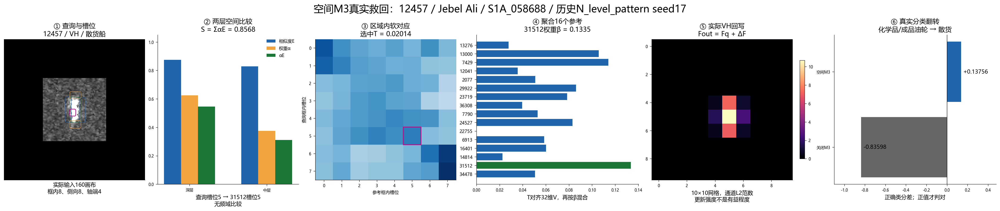
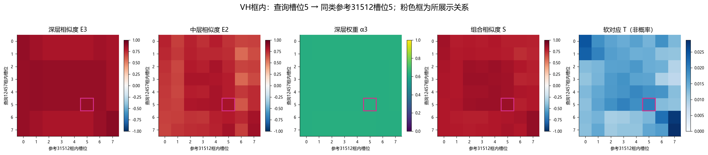
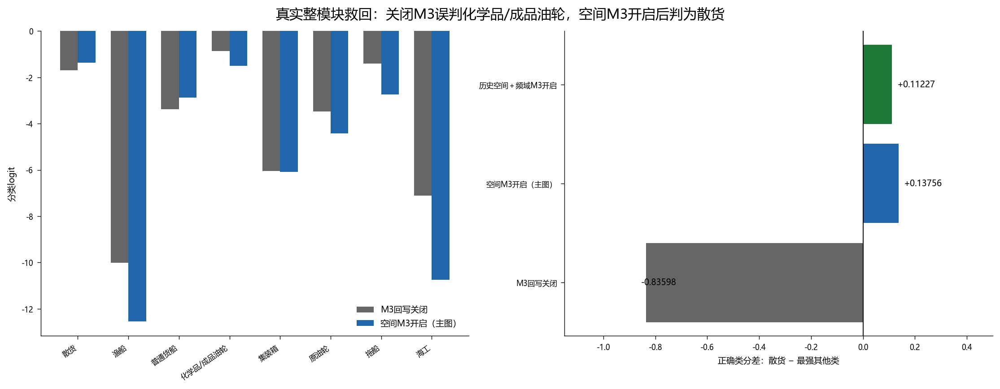
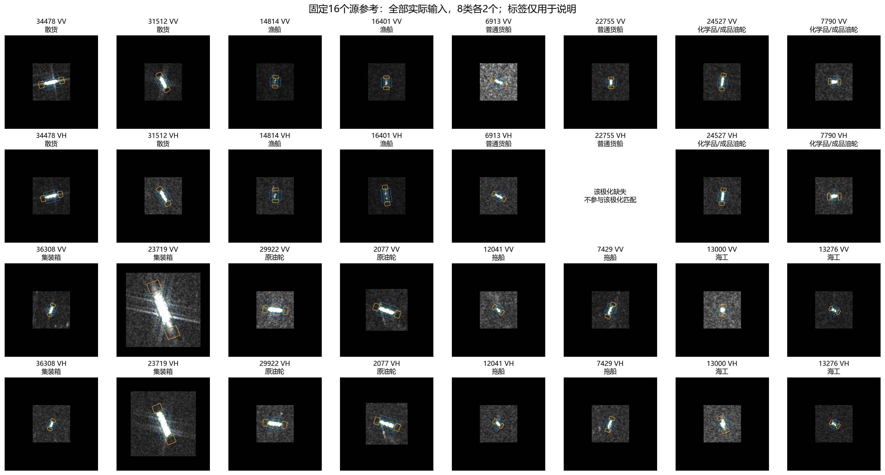

12457：空间M3如何救回一艘散货船
Jebel Ali · S1A_058688_074483 · 历史N_level_pattern / seed17 · 固定16个源参考 · 不重训
确认真实整模块救回：关闭M3回写分差−0.83598，误判化学品/成品油轮；开启空间M3后分差+0.13756，判为散货船。主图关闭M3频域比较；这不是此前24470的“仅频域开关救回”。
边界：使用历史候选及其固定上游缓存，保留历史M1/M2，不是2026-10-31新整合模型的准确率证据。没有修改正式代码或检查点；一个案例不代表总体收益。
① 区域读出
20个槽位；VV/VH分开
② 空间比较
中层＋深层 → S
③ 软匹配
区域内T＋参考权重β
④ 内容搬运
32维V → T对齐 → β聚合
⑤ 特征回写
回到10×10网格，残差相加
⑥ 分类
误判化学品船 → 散货船
横向总图：真实数据贯穿整个M3

总图只选VH框内的一条关系示范计算，实际输出由两极化、三区域和全部合法参考共同形成；下方逐步展开。
2. 多层比较与软对应
本图只使用中、深层空间比较。展示VH框内查询槽位5与参考31512槽位5。E3=0.87420、E2=0.82781；权重分别为0.62484、0.37516；S=0.85680、T=0.02014。该边是事后说明用，未证明单边造成救回。

矢量PDF · 原尺寸PNG7. 最终分类翻转
同一权重、同一查询、同一16参考，仅关闭全部M3回写：化学品/成品油轮→散货船。关闭方式另用gain=0重放核对，结果相同。这是固定模型路径依赖，不是独立重训的无M3对照。

矢量PDF · 原尺寸PNG固定参考与可复现记录

重放数值与核验 · 局部关闭结果 · 固定参考列表